Are the genotypes the ones predicted by random mating? And if they are not, is it inbreeding, a null allele or a mixture of populations? Block 4 tests Hardy–Weinberg equilibrium locus by locus, estimates the inbreeding coefficient FIS and the frequency of null alleles, measures whether loci are inherited independently, and corrects the P values when many tests are run at once.
If plants mate at random, genotype frequencies are fixed by allele frequencies: with two alleles at frequencies p and q, you expect p² AA homozygotes, 2pq heterozygotes and q² aa homozygotes. This is Hardy–Weinberg equilibrium (HWE). A single generation of random mating is enough to reach it.
Equilibrium holds if mating is random, the population is large and there is no selection, migration or mutation changing the frequencies. No real population meets all of these conditions, yet genotypes usually stay very close to expectation. That is why a departure is information: an excess of homozygotes points to selfing, matings between relatives, a mixture of different populations in a single sample, or marker problems; an excess of heterozygotes points to clonal reproduction, a recent cross between different sources, or selection favouring heterozygotes.
The χ² test compares observed and expected genotypes with Σ(O − E)²/E and k(k − 1)/2 degrees of freedom, where k is the number of alleles. It works when every expected genotype has at least 5 individuals, which almost never happens with microsatellites: with 5 alleles there are 15 possible genotypes among which to distribute 25 plants. The exact test (Guo and Thompson, 1992) does not depend on that assumption. It keeps the allele counts fixed, shuffles them at random among the plants thousands of times and asks how unusual the observed table of genotypes is.
| Landrace · locus | Alleles | χ² P | Exact P | Reading |
|---|---|---|---|---|
| Chalqueño · phi053 | 7 | 0.0001 | 0.043 | χ² overstates the evidence hundreds of times over. |
| Palomero · phi072 | 7 | 0.0016 | 0.024 | With many rare genotypes, χ² shoots up. |
| Chalqueño · umc1304 | 5 | 0.0023 | 0.002 | When the departure is large, both agree. |
| If… | then… |
|---|---|
| You use microsatellites or SNPs with rare alleles | Read the exact test. The app flags unreliable χ² values with †. |
| You want to know the direction of the departure | Use the one-tailed tests: one-sided: heterozygote deficit or excess (Rousset and Raymond, 1995). They are more powerful than the global test when you already suspect inbreeding. |
| The exact P is close to α | Raise the permutations to 10,000. With 1000, a P of 0.05 has an error of ±0.007; with 10,000, of ±0.002. |
| You are comparing with an older paper | Show χ² for reference only and explain that the conclusion rests on the exact test. |
A Monte Carlo test never gives P = 0: with B permutations and b tables as unusual as the observed one, P = (b + 1)/(B + 1). The smallest possible value with 1000 permutations is 0.001.
The inbreeding coefficient FIS measures what proportion of the expected heterozygosity is missing: FIS = 1 − Ho/He. It equals 0 under random mating, is positive when heterozygotes are lacking and negative when they are in excess. For a single population the app computes it in two equivalent ways, Nei and Chesser’s (1983) locus by locus and Weir and Cockerham’s (1984) f for all loci together, with a bootstrap interval over loci.
| Statistic | Formula | What it measures |
|---|---|---|
| Unbiased Hs | n/(n − 1) · (1 − Σpi² − Ho/2n) | Expected heterozygosity corrected for sample size (Nei and Chesser, 1983). |
| FIS per locus | 1 − Ho / Hs | Deficit (positive) or excess (negative) of heterozygotes at one locus. |
| Multilocus f | 1 − ΣL Ho / ΣL Hs | FIS of the whole population: a ratio of sums, not a mean of ratios (Weir and Cockerham, 1984). |
| Equilibrium s | 2F / (1 + F) | Selfing rate that would produce that F in a mixed-mating plant. |
| HWE χ² | Σ (O − E)² / E, df = k(k − 1)/2 | Classical test; unreliable with expected genotypes below 5. |
| Exact P | Σ Pr(tables with Pr ≤ Probs) | Probability of a table of genotypes as unusual as the observed one, with alleles held fixed (Levene, 1949; Guo and Thompson, 1992). |
| Null allele · Chakraborty | (He − Ho) / (He + Ho) | Frequency of the allele that fails to amplify (Chakraborty et al., 1992). |
| Null allele · Brookfield 1 | (He − Ho) / (1 + He) | Brookfield’s (1996) variant for when every plant amplifies something. |
| Null allele · EM | iterative maximum likelihood | Separates apparent A/null homozygotes from true A/A ones (Dempster et al., 1977). |
A positive FIS can arise from three very different sources, and it is worth telling them apart before writing “inbreeding” in a paper:
| F | 0.05 | 0.10 | 0.16 | 0.22 | 0.33 | 0.50 | 0.80 | 1 |
|---|---|---|---|---|---|---|---|---|
| s | 10% | 18% | 28% | 36% | 50% | 67% | 89% | 100% |
| Pattern | Likely cause | What to do |
|---|---|---|
| Positive FIS at most loci and an interval for f that excludes 0 | Inbreeding | Report f with its interval and the selfing rate s for reference. Keep the loci. |
| One locus with a significant deficit in half or more of the populations and a null frequency above 5% | Null allele | The app flags the locus as suspected null allele. Recompute FST without it in Block 5 and compare. |
| General deficit and linkage disequilibrium within the population | Wahlund or selfing | Look for subgroups with Block 7. If they appear, the “population” mixes gene pools. |
| Both patterns at once | Inbreeding plus a null | Estimate f from the unflagged loci and report both results. |
| Scattered departures, with no repeated locus or population | Chance or scoring errors | This does not justify removing loci. Check the gels for the extreme cases. |
The automatic diagnosis in card 2 applies this rule. A significant excess of heterozygotes (f with an interval below 0) suggests clonality, a recent cross between different sources or, in small samples, mere chance.
All three estimators attribute the entire heterozygote deficit to null alleles. In the maize example, simulated without nulls, EM reaches 0.183 at Chalqueño · umc1304 because it absorbs the inbreeding. That is why the app does not flag a locus on its estimated frequency alone: it also requires the deficit to recur in at least half of the populations. And the option Treat missing genotypes as null homozygotes should be switched on only if the missing data are amplification failures: in the example, whose missing data are random, it raises the mean EM estimate from 0.026, 0.081 and 0.041 to 0.104, 0.139 and 0.092.
Two loci are in linkage disequilibrium (LD) when their alleles do not combine at random: knowing which allele a plant carries at one locus helps predict the allele at the other. Recombination erases that association generation after generation; what creates or maintains it is physical proximity between the loci, selfing and clonality, which reduce effective recombination, admixture of different populations, drift in small populations, and selection.
For each pair of plants, count at how many allele copies they differ at each locus. If the loci are independent, the differences add up like independent variables and the variance of the total, VD, equals the sum of the per-locus variances. If there is association, plants that differ at one locus tend to differ at the others, and VD grows. The index of association is IA = VD/ΣVj − 1 (Brown et al., 1980). Because it depends on the number of loci, the app also reports its standardised version, r̄d = (VD − ΣVj) / (2 Σj<k √(VjVk)) (Agapow and Burt, 2001), which lies between 0 and 1 apart from small negative fluctuations due to chance and can be compared across studies. It works with codominant, dominant and haploid markers.
Significance is obtained by permutation: the genotypes at each locus are shuffled among plants separately, which destroys any association, and the app counts how often the shuffled r̄d equals or exceeds the observed one. For each pair of loci, r̄d is the correlation between their distances; when every locus has two alleles, the app adds r² and D′ (Excoffier and Slatkin, 1995, to resolve the phases of double heterozygotes). With dominant markers, r² and D′ are computed on band presence and absence, which are not haplotypes: treat them as a correlation between bands.
| If… | then… |
|---|---|
| r̄d ≈ 0 and not significant in every population | The loci behave as independent. The Block 7 methods, which assume this, can be used without reservation. |
| r̄d significant and below 0.05 | Detectable but weak association; it does not bias analyses that assume independence. |
| r̄d significant and above 0.05 within populations | Selfing, clonality or recent admixture. Read Bayesian clustering and assignments with caution. |
| Significant only in the pooled sample | A sign of differentiation between populations, not of physical linkage. |
| One particular pair stands out in several populations | Possible physical linkage between those two loci. Consider using only one of them in analyses that require independence. |
The 0.05 threshold is a guide: in outcrossing plants with unlinked markers, r̄d usually stays below 0.01; in clonal or highly selfing species, values of 0.1 to 0.5 are common.
With α = 0.05, one test in twenty comes out significant even when nothing is going on. The maize example runs 24 Hardy–Weinberg tests, so 1.2 “rejections” would be expected by pure chance; for linkage, 28 pairwise tests are run per landrace. Corrections adjust the P values so that the set of conclusions as a whole remains reliable.
| Method | What it controls and how | When to use it | Significant |
|---|---|---|---|
| None | Nothing: each test at level α. | For exploration only. | 7 |
| Bonferroni | The probability of at least one false positive; multiplies each P by the number of tests m. | Few tests and critical conclusions. | 1 |
| Holm (default) | The same as Bonferroni, but sorts the P values and multiplies the smallest by m, the next by m − 1, and so on (Holm, 1979). | The general-purpose choice: it never rejects fewer than Bonferroni. | 1 |
| Benjamini–Hochberg | The expected proportion of false positives among the rejections (FDR). | Many tests, such as pairs of loci; screening for candidates. | 1 |
| Benjamini–Yekutieli | The FDR even when tests are correlated (Benjamini and Yekutieli, 2001). | Tests that depend on one another. | 0 |
Correcting answers the question “which particular tests are significant?”. Sometimes the question is different: “does this population, as a whole, depart from equilibrium?”. Fisher’s method pools the evidence from several independent tests, X = −2 Σ ln P, which is compared with a χ² with 2k degrees of freedom. In the example, no Chalqueño locus except umc1304 survives the correction, yet combining its 8 loci gives P < 0.0001: the landrace as a whole has fewer heterozygotes than expected. The app shows this combination per population (Fisher (all loci)) and per locus (Fisher (all pops)).
| If… | use… |
|---|---|
| You have dozens of tests and every rejection matters (HWE per locus) | Holm, the default option. |
| You have hundreds or thousands of tests (pairs of loci with dominant markers) | Benjamini–Hochberg: Holm would be so strict that it would detect nothing. |
| You are interested in the population as a whole, not each locus | Fisher’s method, in addition to the per-locus correction. |
| No individual test survives but there are many small P values | Examine the pattern (do they recur at one locus or in one population?) before concluding that nothing is going on. |
Block 4 opens when at least one population has five or more individuals and there are two or more loci. It does not apply to morphological characters or to a single sequence alignment. With diploid codominant markers everything is computed; with dominant or haploid markers, only linkage. On entry, the tests run with the default settings; if you change any of them, click Run the tests.
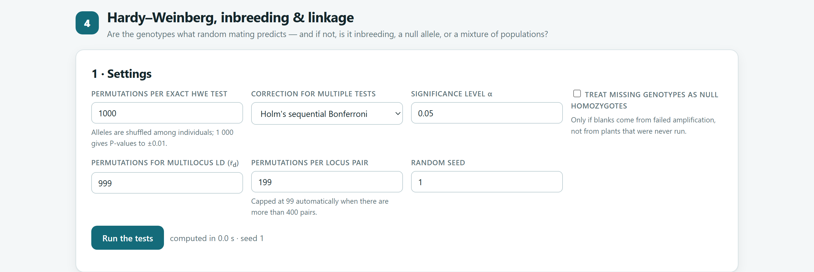
| Setting | Options | Recommendation |
|---|---|---|
| Permutations per exact HWE test | 0 to 100,000 (default 1000). Codominant only. | 1000 for exploration; 10,000 for the paper. |
| Correction for multiple tests | Holm (default) · Bonferroni · Benjamini–Hochberg · Benjamini–Yekutieli · none. | Holm; Benjamini–Hochberg with many pairs of loci. |
| Significance level α | 0.001 to 0.2 (default 0.05). | 0.05. |
| Treat missing genotypes as null homozygotes | Off by default. Codominant only. | Switch it on only if the missing data are amplification failures. |
| Permutations for multilocus LD | 0 to 9999 (default 999). | 999. |
| Permutations per locus pair | 0 to 9999 (default 199); drops to 99 with more than 400 pairs. | 199; with few pairs, 999. |
| Random seed | Integer. | Report it in the methods. |
| Card | Contents | Download |
|---|---|---|
| 2 · What the tests say | Summary values for the whole dataset, automatic diagnosis and interpretation of linkage. | — |
| 3 · Hardy–Weinberg tests, locus by population | The test chosen in Show for each locus and population, with − (deficit) or + (excess), Fisher’s combination per locus and the map of departures. | HWE, FIS and null alleles (CSV) |
| 4 · Inbreeding coefficient FIS | FIS per population with interval and selfing rate; the locus-by-locus diagnosis with its table and figure. | — |
| 5 · Null alleles | Null allele frequency with the estimator chosen in Estimator, and its heat map. | — |
| 6 · Linkage disequilibrium | IA and r̄d per population and for the whole dataset; the pairs of loci for the sample chosen in Sample (the 40 with the highest r̄d), the triangle of pairs and the permutation distribution. | All pairs (CSV) |
| Figure in the app | What it shows |
|---|---|
| Hardy–Weinberg tests at a glance | Locus × population grid coloured by significance level, with − or +. |
| Inbreeding coefficient of every population | Multilocus f with its 95% interval and the per-locus FIS values as faint points. |
| Inbreeding or null alleles? FIS locus by locus | The diagnosis of figure 5.2 with your data. |
| Estimated null allele frequencies | Locus × population heat map of the chosen estimator. |
| Pairwise linkage disequilibrium | Triangle of r̄d, r² or D′ between pairs, with asterisks on those significant after correction; in grey, pairs left undefined by a monomorphic locus. |
| Is the multilocus association more than chance? | Histogram of r̄d across permutations, with the observed value. |
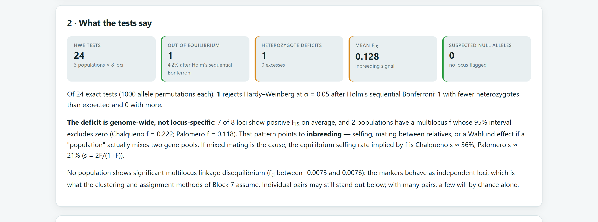
All three landraces were simulated with F = 0.16, yet only two show a clear deficit. With 25 plants and 8 loci there are about 190 genotypes per landrace, and the number of heterozygotes varies from one sample to the next: Cónico came out with 133 where about 117 were expected, almost 2.5 standard deviations above. That is unlikely, but with three landraces it is not unusual for one to stray that far. This is why you should always report the interval, and never conclude “there is no inbreeding” from an interval that includes zero: with more loci or more plants, the interval narrows (table 5.8).
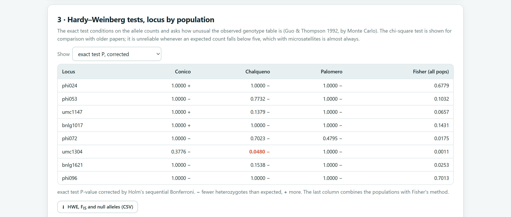
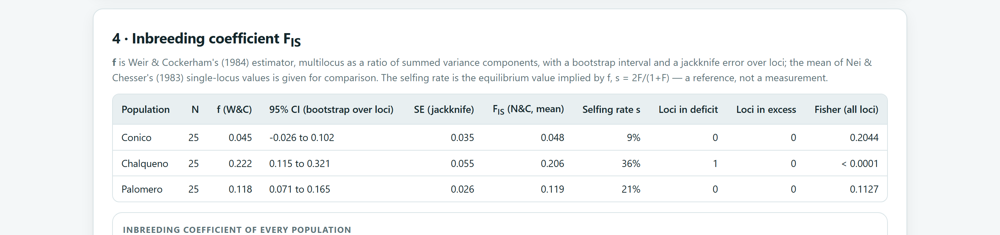
| Landrace | f (Weir and Cockerham) | 95% CI | Jackknife SE | Mean FIS (N&C) | Simulated | Does it include the true value? |
|---|---|---|---|---|---|---|
| Cónico | 0.045 | −0.026 to 0.102 | 0.035 | 0.048 | 0.16 | No: this sample happened to have few homozygotes by chance. |
| Chalqueño | 0.222 | 0.115 to 0.321 | 0.055 | 0.206 | 0.16 | Yes. |
| Palomero | 0.118 | 0.071 to 0.165 | 0.026 | 0.119 | 0.16 | Yes. |
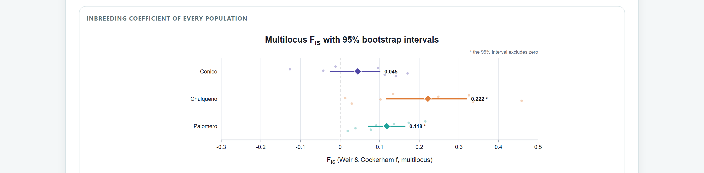
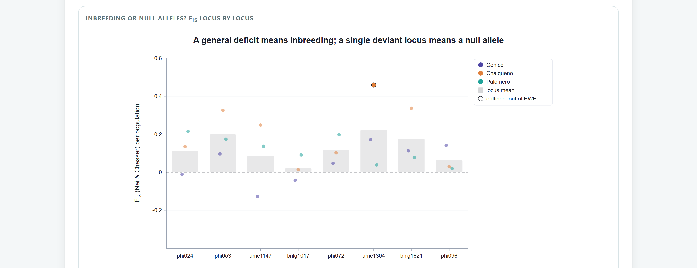
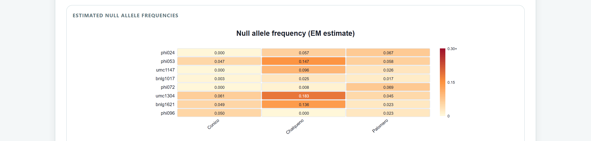
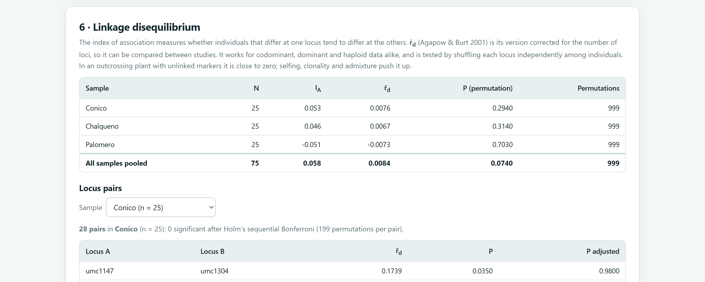
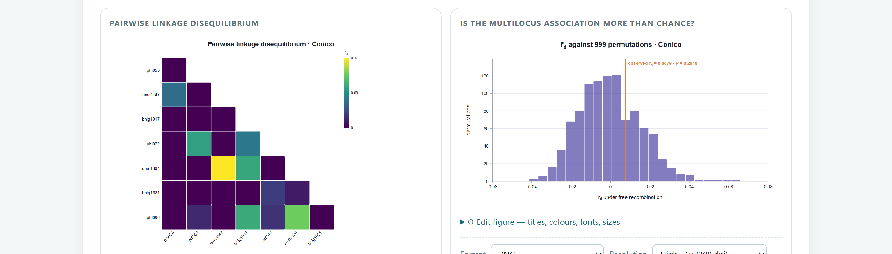
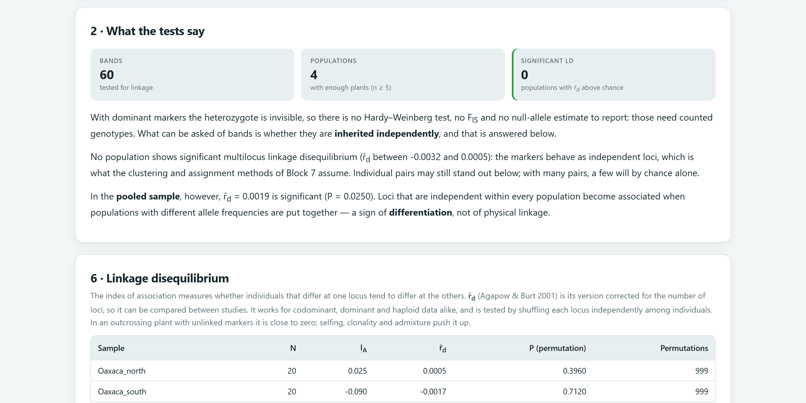
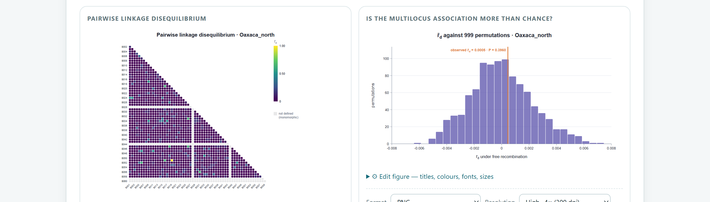
For each population: the number of loci in disequilibrium after correction (state which correction you used), the multilocus FIS with its interval and, if you interpret it as a mating system, the selfing rate for reference. Mention the loci with possible null alleles and whether you excluded them from subsequent analyses. For linkage, r̄d per population with its P. In the methods, the number of permutations and the seed. The HWE, FIS and null alleles (CSV) download contains every value per locus and population to five decimal places.
For this manual, every statistic in the maize example was recomputed with independent code: Nei and Chesser’s FIS, Weir and Cockerham’s f with its jackknife error, χ², the Chakraborty and Brookfield estimators, Holm’s correction, IA and r̄d agree to the 12th decimal place. The exact test was compared against full enumeration of every possible table of genotypes in the 14 cases with five alleles or fewer, and against 20,000 permutations in the other 10. The largest difference, at Cónico · bnlg1017 (0.089 against an exact 0.065), is due to the randomness of the 1000 permutations: with 100,000, the app gives between 0.064 and 0.067. The EM estimator agrees with an independent implementation of our own to the ninth decimal place.
With the genotypes reviewed and the problematic loci identified, the next chapter moves from the individual population to the set as a whole: Block 5 measures how much populations differ with FST, GST, Jost’s D and the analysis of molecular variance (AMOVA).